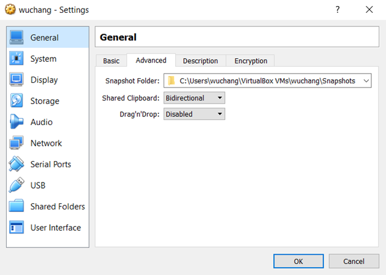
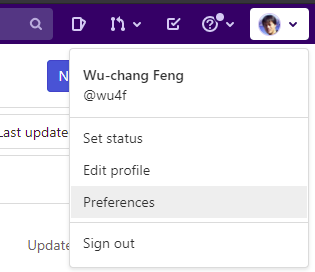
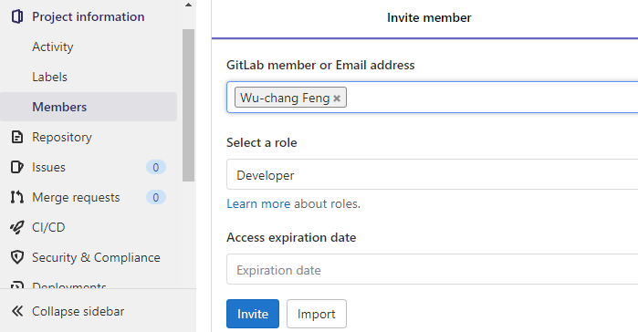

On a computer you wish to do your coursework on, install a Ubuntu 20.04 VM.
Ubuntu ISO
First, download the desktop installation CD image (iso) at https://releases.ubuntu.com/20.04/ . Note that if you choose to use an alternate version, we may not be able to help you debug issues you have on your setup.
VirtualBox
Then, download and install VirtualBox at https://www.virtualbox.org/wiki/Downloads. Note that those with a Windows OS may skip this step and instead use Windows Subsystem for Linux (WSL) to install Ubuntu.
Launch VirtualBox and click on "New" to create a VM. create a VM whose name is your OdinID, so that it appears in all of the screenshots for your lab notebook done on the VM. The configuration should be done as shown below:
- Name:
OdinID - Type: Linux Version: Ubuntu (64-bit)
- Memory size: 2048MB (if you have sufficient RAM on the host)
- Number of Processors: 2 (or more)
- When creating a virtual hard disk
- File size: 20.0 GB (Dynamically allocated VDI)

Then, in Settings=>Storage=>CD drive:, click on the CD icon. Choose "Virtual Optical Disk File..".

Select the ISO you just downloaded. Then, click "Start" to boot VM using the ISO as a startup disk. When prompted, install Ubuntu. After installation, restart the VM and then login to it. Within the VM, install git, Python, Python's package manager, and Python's virtual environment tool:
sudo apt update –y sudo apt install python3-pip python3-dev python3-venv git -y
Also install docker and its packages. Add yourself to the docker group so that you're able to run the docker commands without sudo.
sudo apt install docker.io -y sudo usermod -a -G docker $(whoami)
Power down the VM.
Visit the VirtualBox General settings for the VM to enable the shared clipboard. Note that you may need to install the Guest Additions on the VM

If you're not aware, there is a Slack workspace for computer science students here at PSU. If you haven't already, create a Slack account, join the workspace at https://pdx-cs.slack.com and add the course channel linked on the course web page. All course communication will be done through this platform; check the pinned section for important updates. Note that the course has a corresponding webpage for more permanent information. You can contact the professor via Direct Message @wuchang.
If you have a sensitive comment that you wish to notify me of anonymously, you may do so by visiting this page in an Incognito window: https://bit.ly/sayat-wuchang
We'll be using GitLab for the course's source control. Create an account via Google using your @pdx.edu email address by visiting https://gitlab.com/users/sign_up.

Upon completion, use the same credentials to login to GitLab. After logging in you should see the following:

Go to the upper right hand corner and click on the dropdown that is your user profile. You should see the option for "Preferences". Click on this option and you'll be taken to a page for customization of your avatar, status, and main settings.

In the left hand column there is an entry for SSH Keys. Select that entry and wait here. We're going to create a local public/private key pair to securely transfer data between the local repository and this remote hosted by GitLab.
SSH Keys
We will now create a local public/private ssh key pair on our Linux VM to securely transfer data between a local git repository and this remote hosted by GitLab.
Log into your Linux VM and change into the directory where SSH keys are stored:
cd ~/.ssh/
If you have not setup an SSH key before, perform the following
ssh-keygen -t rsa
We're specifying rsa here for clarity, although this is the default encryption method. Hitting enter will create a file named id_rsa which we'll use as an example. You should now have two files containing the key-pair in the ~/.ssh/ directory. One has a .pub extension and is your public key. The other is your private key and should never be revealed.
We will now add this public key to GitLab. Dump the contents of the key out:
cat id_rsa.pub
Then, copy and paste this into the SSH key field on GitLab in your browser. Finally, click "Add Key".
Create Project
Go back to the projects page and create a "New project" that is blank. 
Name the new project via the ProjectName above. Make sure the repository is still marked "Private" and initialize it with a README file.

Invite Instructor and TA as project developers
Next, go to the Settings tab and select members. From here you can add members to your project by typing in their username. Add the instructor and the TA as Developers to your project via their pdx.edu e-mail addresses (e.g. 
 Setup client
On your Linux VM, set up your name and e-mail address for git.
git config --global user.name "<FirstName> <LastName>" git config --global user.email "<OdinID>@pdx.edu"
Then, clone the repository to your machine and change directories into it.
git clone git@gitlab.com:<GitLab-Username>/<ProjectName>.git cd <ProjectName>
We will now edit our first file and commit its changes to our repository. To do so, edit README.md file to show multiple styles of titles and lists in Markdown. Then, stage the file for addition, commit the file to the local git repository, then push the local commits to the remote version on GItLab.
Now, add it to the list of changed files that you want to stage to commit to the repository.
git add README.md
Commit all changed files that have been staged to the local git repository.
git commit -m "add README"
Then, push the copy of the local Commit all changed files that have been staged to the local git repository.
git push -u origin main
.gitignore
It is often the case that you'll have files in your local directory that you do not want added to your repository. To specify that these files should not be included in any commits, git uses a file called .gitignore. Create a .gitignore file that contains files that are common to Python that you do not want to add to your repository.
env/
*.pyc
__pycache__/Then, add it to the files you wish to commit, commit the file to your local repository, and then push the local repository to its remote.
git add .gitignore git commit -m "Adding .gitignore" git push -u origin main
Now we'll create a directory for the initial homework.
mkdir hw1
Within that directory make a README.md file that expresses some understanding of Markdown.
cd hw1 vi README.md
We'll create another file for storing your wallet's public key and your username. This is so we can uniquely identify you and confirm your completion of the exercises. Leave it empty for now.
touch wallet.txt git add . git commit -m "Adding hw1" git push -u origin main
All of the course submissions will be handled via Git. Part of the rubric is that you commit changes to Git frequently. We ask that you also use descriptive commit messages.
Incognito mode
To avoid applying the coupon you receive to the incorrect account, ensure that these steps are done in an "Incognito" or "Private Browsing" browser window to set up your account.
Then, visit https://console.cloud.google.com and login using your pdx.edu account to enable GCP. If you haven't used GCP yet and do not mind temporarily putting your credit card on the account, apply for the $300 coupon and use it to create a new billing account. Otherwise, wait for the instructor to email you a course coupon.
Create Project
Click on the pdx.edu organization from the console.

Then, click on "New Project"
Create a Google Cloud project with your ProjectName from above.

You should be taken to your project's Home page. For your lab notebook, you will need to ensure that all of your screenshots for your Google Cloud labs include your ProjectName.
To examine your Billing account and its usage, go to the Billing page from the console at https://console.cloud.google.com/billing